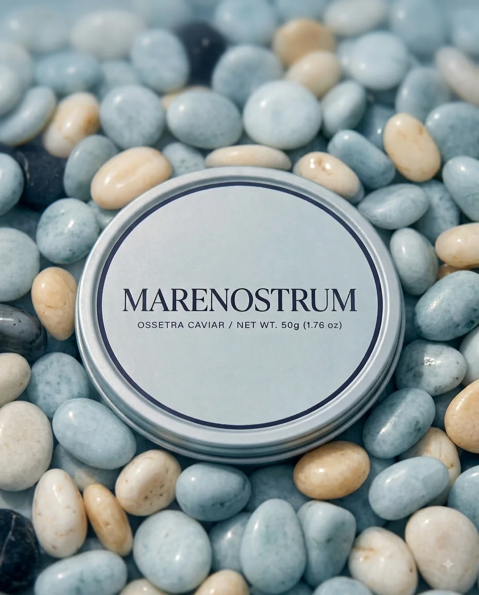
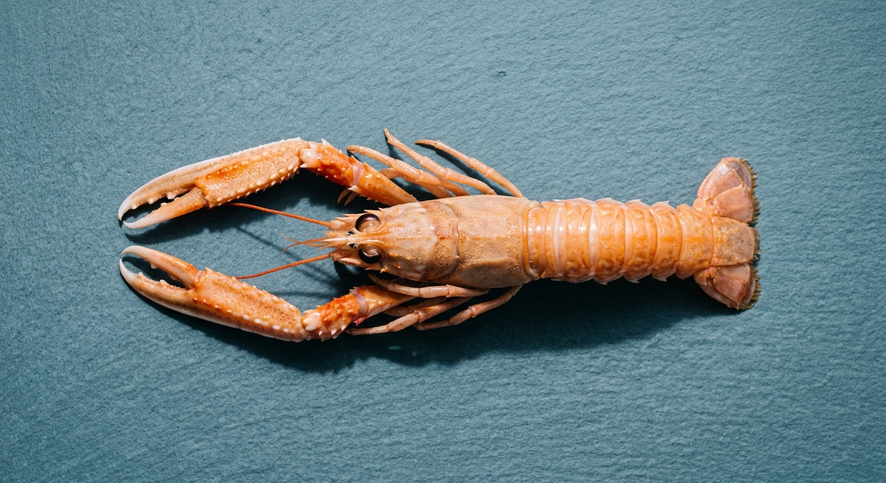
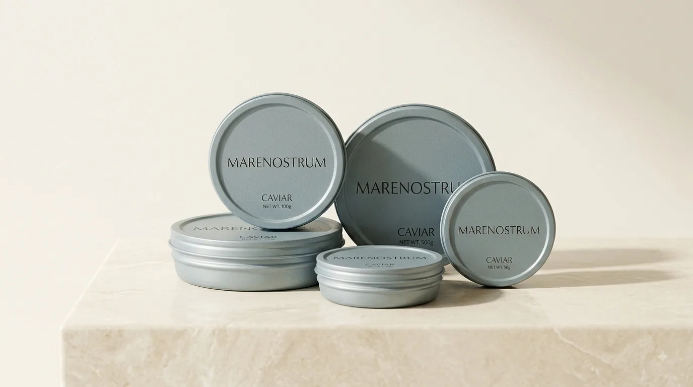

Notre sélection
La Table
Le Caviar et La Mer : deux univers, un même niveau d'exigence. Aucun prix affiché — chaque pièce s'obtient sur demande d'allocation.
Univers
Le Caviar
Quatre espèces sélectionnées pour leur calibrage et leur régularité, proposées en quatre formats uniquement : 30 g · 50 g · 125 g · 500 g.
Osciètre
Acipenser gueldenstaedtii
Grain ferme, notes de noisette, constant d'une commande à l'autre.
Formats : 30 g · 50 g · 125 g · 500 g
Demander une allocation →Beluga
Huso huso
Le grain le plus gros et la texture la plus crémeuse de notre sélection.
Formats : 30 g · 50 g · 125 g · 500 g
Demander une allocation →Baeri
Acipenser baerii
Texture souple et grain constant, un bon repère pour évaluer la régularité.
Formats : 30 g · 50 g · 125 g · 500 g
Demander une allocation →Sevruga
Acipenser stellatus
Grain plus petit, notes iodées franches, constantes lot après lot.
Formats : 30 g · 50 g · 125 g · 500 g
Demander une allocation →Affinage Malossol, étiquette CITES, fiche de lot par expédition — le détail de notre méthode est sur Notre savoir-faire.
Univers
La Mer
Une sélection resserrée de produits de la mer d'exception — pas un catalogue exhaustif.
Poisson de ligne
Bar de ligne, pêché à l'unité et calibré pour la restauration gastronomique — jamais en volume.
Demander une allocation →
Langoustine
Vivante ou ultra-fraîche selon la demande, calibrée pièce par pièce.
Demander une allocation →
Terrines & conserves d'exception
Une gamme de préparations en conserve, au même niveau d'exigence que nos pièces fraîches.
Demander une allocation →Vous ne trouvez pas la pièce recherchée ?